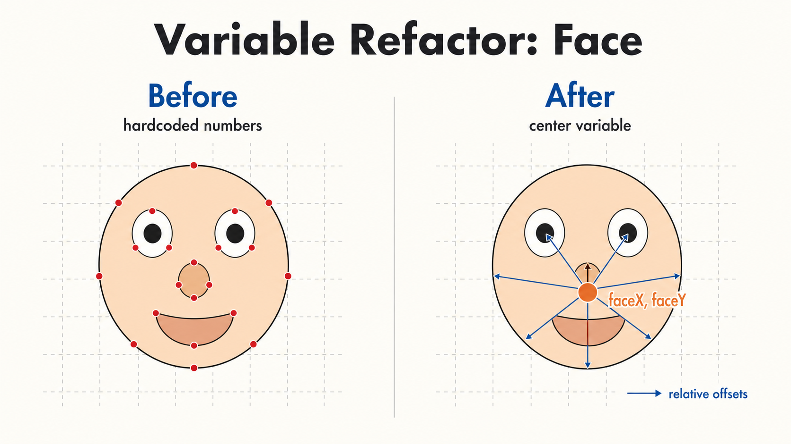

2주차 3교시 — 학생 주도 실습: 마우스를 따라다니는 나만의 캐릭터
강의 아웃라인: week-02-outline 이전 교시: week-02-period2-student (시스템 변수와 인터랙션 첫걸음) 다음 주차: week-03-outline (색상 체계와 for 반복문)
| 항목 | 내용 |
|---|---|
| 대상 | P5.js 입문자 (테크아트 전공) |
| 소요 시간 | 45분 |
| 이전 작업 | 1교시 얼굴 변수 코드, 2교시
mouseX/mouseY·잔상 효과 |
| 결과물 | 마우스에 반응하는 인터랙티브 캐릭터 스케치 1점 |
- 1주차 얼굴 그리기를 변수와 시스템 변수로 업그레이드합니다
-
mouseX·mouseY를 활용해 마우스에 반응하는 인터랙티브 스케치를 완성합니다
실습 시작 가이드
오늘 배운 모든 것을 써서 마우스를 따라다니는 나만의 인터랙티브 캐릭터를 만듭니다.
실습 과제
1주차에 만든 얼굴(또는 새 캐릭터)을 변수로
리팩토링하고, mouseX/mouseY를
활용하여 마우스에 반응하는 인터랙티브 스케치를
완성합니다.
필수 요구사항
| # | 요구사항 | 관련 개념 |
|---|---|---|
| 1 | 하드코딩된 좌표를 변수로 교체 | 1교시: let, 변수 |
| 2 | mouseX/mouseY로 마우스
반응 |
2교시: 시스템 변수 |
| 3 | triangle() 등 새 도형 1개 이상
추가 |
1교시: triangle() |
| 4 | stroke()/strokeWeight()로 테두리
스타일링 |
1교시: stroke 계열 |
아래 단계별 가이드를 순서대로 따라가면 됩니다. 막히면
console.log()로 값을 확인하고, 계속 해결되지 않으면 수업
중에 질문하세요.
스타터 코드
1주차 얼굴 코드가 없으면 아래 코드를 복사해서 시작하세요. 자기 코드가 있으면 그것을 사용해도 됩니다.
function setup() {
createCanvas(400, 400);
}
function draw() {
background(255, 220, 180);
// 얼굴
fill(255, 230, 200);
ellipse(200, 200, 180, 200);
// 왼쪽 눈
fill(255);
ellipse(160, 180, 40, 40);
fill(0);
ellipse(160, 180, 20, 20);
// 오른쪽 눈
fill(255);
ellipse(240, 180, 40, 40);
fill(0);
ellipse(240, 180, 20, 20);
// 코
fill(255, 200, 170);
ellipse(200, 210, 15, 20);
// 입
fill(200, 100, 100);
ellipse(200, 245, 40, 15);
}Step 1 — 변수로 리팩토링
목표
하드코딩된 좌표를 faceX, faceY 변수로
교체합니다.

가이드
코드에서 200이 반복되는 부분을 찾아보세요. 얼굴의 중심
좌표가 (200, 200)입니다. 이것을 변수로 바꿉니다.
- 코드 맨 위(
setup()위)에 변수를 선언합니다:
let faceX = 200;
let faceY = 200;- 각 도형의 좌표를 변수 기준 상대 위치로 바꿉니다:
| 원래 코드 | 변수 버전 | 이유 |
|---|---|---|
ellipse(200, 200, ...) |
ellipse(faceX, faceY, ...) |
얼굴 중심 |
ellipse(160, 180, ...) |
ellipse(faceX - 40, faceY - 20, ...) |
왼쪽 눈: x -40, y -20 |
ellipse(240, 180, ...) |
ellipse(faceX + 40, faceY - 20, ...) |
오른쪽 눈: x +40, y -20 |
ellipse(200, 210, ...) |
ellipse(faceX, faceY + 10, ...) |
코: y +10 |
ellipse(200, 245, ...) |
ellipse(faceX, faceY + 45, ...) |
입: y +45 |
faceX값을100이나300으로 바꿔서 얼굴 전체가 이동하는지 확인합니다.
이 단계가 끝나면
let faceX = 200;
let faceY = 200;
function setup() {
createCanvas(400, 400);
}
function draw() {
background(255, 220, 180);
// 얼굴
fill(255, 230, 200);
ellipse(faceX, faceY, 180, 200);
// 왼쪽 눈
fill(255);
ellipse(faceX - 40, faceY - 20, 40, 40);
fill(0);
ellipse(faceX - 40, faceY - 20, 20, 20);
// 오른쪽 눈
fill(255);
ellipse(faceX + 40, faceY - 20, 40, 40);
fill(0);
ellipse(faceX + 40, faceY - 20, 20, 20);
// 코
fill(255, 200, 170);
ellipse(faceX, faceY + 10, 15, 20);
// 입
fill(200, 100, 100);
ellipse(faceX, faceY + 45, 40, 15);
}좌표를 쓸 때 faceX - 40(빼기)을
faceX, -40(쉼표)으로 잘못 쓰기 쉽습니다. 쉼표가 아니라 빼기
기호입니다.
Step 2 — 마우스 따라다니기
목표
mouseX/mouseY로 마우스에 반응하도록
변경합니다.
가이드
draw() 함수 안의 맨 첫
줄(background() 바로 아래)에 두 줄만
추가합니다.
function draw() {
background(255, 220, 180);
faceX = mouseX; // 추가!
faceY = mouseY; // 추가!
// 나머지 코드는 그대로...
}let faceX = mouseX;가 아니라
faceX = mouseX;입니다. let은 맨 위에서 이미
썼으니, 여기서는 값만 바꾸는 것입니다. 이 두 줄은
draw() 안에 써야 매 프레임
업데이트됩니다.
확인 방법
- 실행 후 마우스를 움직여보세요. 얼굴 전체가 따라오나요?
- 잘 안 되면
console.log(faceX, faceY);를draw()안에 넣어 값을 확인하세요.
변형 아이디어
얼굴 전체를 따라가게 하는 대신, 눈동자만 따라가게 할 수도 있습니다. 2교시에서 배운 오프셋 방식을 써보세요.
// 눈동자를 마우스 방향으로 살짝만 이동
ellipse(
faceX - 40 + (mouseX - faceX) / 15,
faceY - 20 + (mouseY - faceY) / 15,
20, 20
);Step 3 — 도형 추가 및 꾸미기
목표
triangle()로 모자/뿔을 추가하고,
stroke()/strokeWeight()로 스타일링합니다.
모자(삼각형) 추가
얼굴 위에 파티 모자를 올립니다. 삼각형의 세 꼭짓점을
faceX, faceY 기준으로 잡으면 모자도 얼굴과
같이 움직입니다.
// 파티 모자 (얼굴 코드 전에 그려서 얼굴 뒤에 자연스럽게 깔림)
fill(255, 50, 50);
triangle(
faceX, faceY - 140, // 꼭짓점 (머리 위)
faceX - 50, faceY - 70, // 왼쪽 아래
faceX + 50, faceY - 70 // 오른쪽 아래
);P5.js는 코드 순서대로 그리므로 먼저 그린 도형이 뒤에 깔리고 나중에 그린 도형이 위에 덮입니다. 파티 모자는 머리 위에 올라가 있으니, 얼굴 코드 앞에 써서 얼굴 뒤쪽에 그리도록 합니다. 모자를 얼굴 위에 덮고 싶으면 얼굴 코드 뒤에 씁니다.
테두리 스타일링
도형에 테두리를 추가해 더 풍성하게 만듭니다.
// 얼굴에 두꺼운 테두리 추가
stroke(180, 150, 130); // 갈색 테두리
strokeWeight(3); // 두께 3px
fill(255, 230, 200);
ellipse(faceX, faceY, 180, 200);
// 눈에는 테두리 없이
noStroke();
fill(255);
ellipse(faceX - 40, faceY - 20, 40, 40);꾸미기 아이디어
| 아이디어 | 사용 도형/함수 | 힌트 |
|---|---|---|
| 파티 모자 | triangle() |
얼굴 위에 삼각형 |
| 뿔 2개 | triangle() × 2 |
faceX -30, faceX +30 기준 |
| 안경 | noFill() + ellipse() +
line() |
테두리만 있는 원 + 연결선 |
| 리본/나비넥타이 | triangle() × 2 |
얼굴 아래에 좌우 대칭 삼각형 |
| 볼터치 | fill(255, 150, 150) + noStroke() |
분홍 원 |
가이드에 없는 도형이나 배치를 시도해도 좋습니다.
rect()로 네모 모자를 만들거나 line()으로
수염을 추가해보세요.
Step 4 — 확장: 잔상 효과 (선택)
목표
background() alpha로 잔상 효과를 실험합니다. Step 1~3을
다 끝냈다면 도전해보세요.

방법 1: 잔상 효과
// draw() 안의 background()를 이렇게 바꿔보세요
background(255, 220, 180, 30); // 마지막 숫자가 alphaalpha 값을 10, 30, 50, 100으로 바꿔가며 잔상 강도를 비교해보세요.
방법 2: 드로잉 모드
function setup() {
createCanvas(400, 400);
background(255, 220, 180); // setup()으로 옮기기
}
function draw() {
// background() 제거!
faceX = mouseX;
faceY = mouseY;
// ... 나머지 코드
}마우스를 움직이면 캐릭터가 궤적을 남기면서 그림을 그립니다.
방법 3: width/height 활용
// 하드코딩 대신 캔버스 크기 변수 사용
function setup() {
createCanvas(600, 400); // 크기를 바꿔도 중앙 유지
}
function draw() {
background(255, 220, 180);
// faceX = width / 2; ← 중앙 고정 시
// faceY = height / 2;
// ...
}마무리
스케치 저장 확인
코드를 저장합니다. Ctrl+S(맥은
Cmd+S)를 누릅니다. 스케치 이름도
Week2_InteractiveFace처럼 의미 있는 이름으로 바꿔두면
나중에 찾기 쉽습니다.
오늘 수업 정리
오늘 3교시 동안 한 일을 한 문장으로 정리하면 — 숫자를 하드코딩하던 정적 코드를, 변수와 시스템 변수로 유연하게 만들어서, 마우스에 반응하는 인터랙티브 스케치로 업그레이드했습니다.
다음 주 예고
다음 주에는 색상 체계(RGB, HSB, 투명도)와
for 반복문으로 패턴 아트를 만듭니다.
반복문을 쓰면 원 하나를 그리는 코드로 수백 개의 원을
한꺼번에 그릴 수 있습니다. 또한 실습과제 1이 안내될
예정입니다. 오늘 배운 변수와 mouseX/mouseY를
잘 복습해두세요.
(선택) 사전 학습 영상
필수는 아니지만, 미리 보면 다음 주 수업이 더 수월합니다.
- The Coding Train “2.1 Variables in p5.js” (약 10분)
- The Coding Train “2.2 mouseX, mouseY” (약 10분)
완성 체크리스트
| 구분 | 기준 |
|---|---|
| 기본 | 변수 사용 + mouseX/mouseY 활용 + 도형 3개
이상 |
| 도전 | 잔상 효과, width/height 활용한 반응형
배치, 창의적 캐릭터 디자인 |